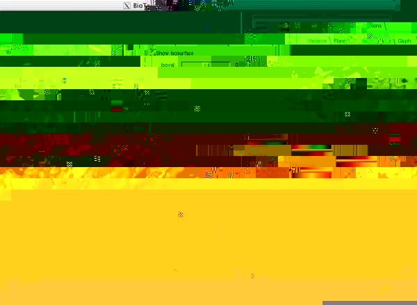

Figure 10: Isosurface Visualization.
Note: The 1.20.0 version of BioFEM renders the isosurface faces
using a constant per-face normal. In our 1.20.1 release, we will
enable the rendering option to display faces with interpolated normals,
which will produce smoother surface renderings, as demonstrated in Figure 10.
Just as the planes can be used to clip the isosurface, the isosurface
can also be used to clip the planes. An example of this is shown in
Figure 11. We have set the
isosurface value very low (0.01), have turned off the "Show
Isosurface" button, and on the Planes tab have selected the Clip to
Isosurface button.

Figure 11: Clipped Planes Visualization.
Under the Glyphs tab, you can select the type, placement, and coloring
of tensor glyphs within the volume. The default setting is to render
box glyphs, seeded on the planes of the planes, colored based on the
principle eigenvector direction (as above) as shown in Figure 12. A zoomed-in figure of the
superquadric glyphs rendered on the cutting planes is shown in Figure 13. In addition to colored-box glyphs,
the tensors can be rendered as RGB boxes, ellipsoids, or superquadric
glyphs. With the controls at the top of the panel, you can select the
discretization level used for the round glyph shapes (which are
approximated using triangular meshes), you can select whether or not
to normalize the volume (to 1.0) of each tensor before rendering, as
well as whether to scale the volume of each tensor, and whether to
exaggerate the anisotropy of the tensor (and by how much). Finally,
using the options in the "Seed At" frame, you can choose where to
place the glyphs: either at a single point (controlled by the position
of a sphere widget in the Rendering window: use Shift-LeftMouse to
select and move widgets), seeded along a line specified by a rake
widget, seeded on the visible cutting planes, or seeded at the grid
point located within the prescribed isovolume.

Figure 12: Glyph Box Visualization.

Figure 13: Superquadric Glyph Visualization.
As with the tensor glyphs, you can select seed locations and
colorization options for rendering fibers within the brain. A variety
of these options are shown in Figure 14, Figure 15, and Figure 16.
Additionally, you can set a number of parameters that control the
fiber tracing algorithm. These parameters include:
- Algorithm: trace along the major eigenvector or using the
tensorlines algorithm; choose a step size, as well as whether
to use Euler or RK4 (fourth-order Runge-Kutta) integration.
- Sampling Kernel: when querying tensor values between discrete
sample locations, the interpolation kernel to be used (Tent,
Catmull-Rom, or B-Spline).
- Stopping Criteria: choose a set of criteria which can be
evaluated to determine whether to terminate a fiber. If any of
the criteria are true, the fiber will terminate. These
criteria include: exceeding a specified maximum fiber length,
exceeding a maximum number of steps, and entering a region of
the volume which falls below a specified anisotropy threshold
(either Linear Anisotropy or Fractional Anisotropy).